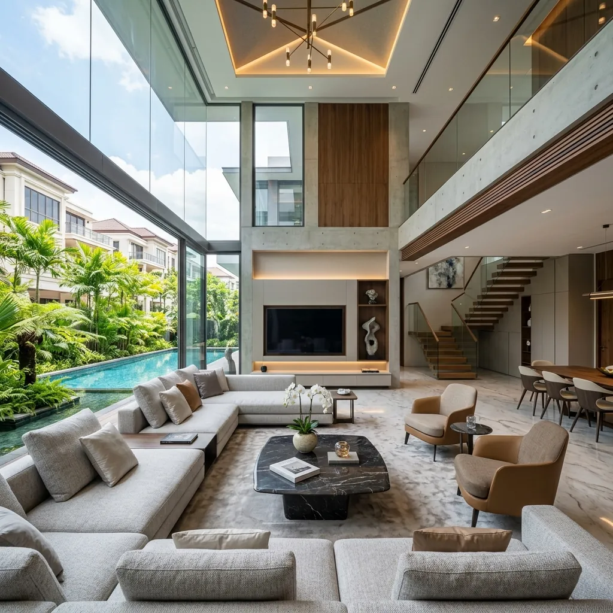

A 20% ABSD bill on a S$1.5M second condo is S$300,000. Decoupling is the legal route many Singapore couples use to wipe most of that cost away. The mechanics are simple. The numbers, less so. Here is the full math on a S$5M landed home.
This guide walks through a realistic S$5M landed case study: BSD on the bought-over half, the CPF refund plus accrued interest, and the TDSR check on the receiving spouse.
Decoupling is a part-share transfer. One co-owner sells their share of a private property to the other co-owner, usually a spouse. After the transfer, only one name sits on the title. The other name is now free of any property in Singapore.
That free name matters. Under IRAS ABSD rules, a Singaporean's first property is 0% ABSD, second is 20%, third is 30%. PRs pay 5% / 30% / 35%. Foreigners pay 60% from the first. Decoupling resets the count, so the next purchase lands at 0% instead of 20%.
The receiving spouse pays Buyer's Stamp Duty on the half they take over. ABSD only applies if they already own another property at that moment, which is why the order of transactions matters.
Since 2016, married couples cannot decouple HDB flats except in narrow cases such as divorce, death, financial hardship or loss of citizenship. This article covers private condos and landed property only.
Meet John and Jane. Both Singapore Citizens. They bought a landed home together six years ago. The valuation today is S$5,000,000. They hold the title as joint tenants, so each owns a 50% share worth S$2.5M.
They want a S$1.5M condo as their second property. Bought jointly, that triggers 20% ABSD on the full price: S$300,000. Bought in a single freed name, it triggers 0%. The arithmetic alone explains why decoupling exists.

A S$5M landed home decoupled cleanly. Freeing one spouse's name lets the household acquire an additional property like a S$1.5M condo at 0% ABSD instead of 20%.
John is buying a S$2.5M slice of property from Jane. IRAS treats it as a normal purchase. He pays BSD on the S$2.5M consideration, on the standard tiered residential schedule.
The 2026 BSD tiers run 1% on the first S$180K, 2% on the next S$180K, 3% on the next S$640K, 4% on the next S$500K, 5% on the next S$1.5M, then 6% above S$3M. Stacked up to S$2.5M, John's BSD lands near S$84,600. The S$2.5M consideration sits inside the 5% band, so the top S$1M of his slice is taxed at 5%.
| Cost item | Amount (S$) | Notes |
|---|---|---|
| Buyer's Stamp Duty | ~S$84,600 | Levied on John's S$2.5M part-share at standard residential BSD tiers. |
| ABSD (John) | S$0 | The landed home stays his only property. No second-property ABSD applies on the buyout itself. |
| Seller's Stamp Duty (Jane) | S$0 | Held over 3 years. SSD only bites in years 1–3 at 12% / 8% / 4%. |
| Conveyancing legal fees | ~S$5,000 – S$6,500 | Two firms. One for the seller, one for the buyer. Conflict of interest forbids a single lawyer. |
| Valuation fee | ~S$500 – S$1,000 | The bank orders a fresh valuation to size John's new mortgage. |
| Mortgage redemption admin | ~S$200 – S$500 | Discharging the joint loan and registering the new sole-name loan. |
All-in transaction cost on the decoupling leg is roughly S$90,000 to S$93,000. Set that against the S$300,000 ABSD that would have hit a second condo bought in joint names, and the gross saving is around S$207,000 to S$210,000 before the cost of the new mortgage on Jane.
Two firms, two engagement letters. Buyer and seller must use separate solicitors, which is why decoupling legal fees run higher than a normal resale conveyancing.
The S$90K spend hurts on paper, but it is a one-time cost. The S$300K ABSD alternative is permanent and earns nothing. On a S$1.5M second purchase the breakeven is obvious. On smaller second purchases, say S$800K to S$1M, the math gets tighter and you need to run it carefully.
Jane does not walk away with S$2.5M in cash. She must first refund her CPF Ordinary Account for every dollar drawn on this property, plus 2.5% p.a. accrued interest the OA would have earned.
Say Jane used S$300,000 of CPF OA over the years and accrued interest is around S$45,000. On completion, S$345,000 returns to her CPF OA. Only the residual equity, after settling her share of the outstanding bank loan, comes to her as cash.
That refunded CPF is not stuck. Jane can redeploy it on her new condo down payment under the standard CPF OA usage rules for property.
This is where most decoupling plans live or die. John must now carry the entire landed mortgage on his name alone. The bank cancels the joint loan and writes a fresh facility in his sole name, sized to cover both his original share of the loan and the cash he is paying Jane for her half.
His income has to clear the TDSR for private property at the 55% ceiling, and the bank stresses the repayment at the MAS 4% stress test floor, not the contracted rate. On a multi-million loan that filter is unforgiving.
Bank rates today start from 1.40% fixed and SORA-linked packages are pricing around 1.65% to 1.85% effective. Useful, but TDSR is calculated against the 4% floor regardless. You can see live numbers on our current Singapore home loan rates page and stress-test John's repayment on the TDSR/MSR affordability calculator before signing anything.
If John's income falls short, common fixes include adding a guarantor, extending the loan tenure within MAS limits, or pairing the buyout with an equity / cash-out loan to close the cash gap. Many clients also run a refinance savings calculator scenario once the sole-name loan beds in.
LTV on Jane's new condo is 75%, because it is her only property at the moment of purchase. In joint names the second-property 45% LTV would have applied. Another quiet win for the decoupling route.
Decoupling is not a universal hack. It works when three conditions hold together.
Skip it if the receiving spouse is near retirement, has unstable commission income, or if divorce or job change is on the horizon. The legal cost is sunk and the new mortgage is locked in for years.
We size the new sole-name loan against MAS stress rules, model the CPF refund, and compare BSD costs against your projected ABSD savings. Free, no obligation, paid by the bank.
WhatsApp Dan — Free AssessmentWant the full second-property playbook in writing? Download the Singapore Mortgage Free Report — covers decoupling, 99-1 audits, ABSD remission timelines and sole-name TDSR sizing.
No, not in normal circumstances. Since 2016, HDB has not allowed married couples to decouple or transfer ownership between themselves except in narrow cases such as divorce, death, financial hardship or loss of citizenship. Decoupling is a strategy reserved for private condos and landed property.
A 99-1 holding means one spouse owns 99% and the other 1%. When they decouple later, BSD is paid on the 1% slice, which makes the transfer very cheap. IRAS has been auditing 99-1 structures put in place purely to dodge ABSD on a planned second purchase. If the arrangement looks contrived, expect a stamp duty avoidance assessment plus surcharges.
Yes. The seller and the buyer must be represented by different law firms to avoid conflict of interest. That is why total legal cost for decoupling typically runs S$5,000 to S$6,500, higher than a standard resale.
No, as long as the landed home is the only Singapore residential property they own at the moment of the transfer. ABSD only kicks in if they already hold a separate residential property under their name. That is why most couples decouple before the next purchase, not after.
Only if the property has been held under 3 years from original purchase. Per IRAS SSD rules, the rate is 12% in year one, 8% in year two, 4% in year three, applied to the half being sold. After year three, SSD is zero.
This article is general information for Singapore borrowers. It is not financial, legal or tax advice. Stamp duty figures are indicative and rounded; the actual BSD payable depends on the exact consideration and IRAS calculation. Always engage a licensed conveyancing solicitor and confirm CPF refund quantum with the CPF Board before executing a decoupling. Last updated 28 April 2026.